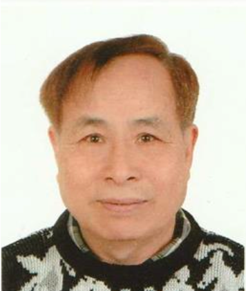

30 年深耕动物疫苗的中美科学家团队
林旭埜博士 30 年深耕动物疫苗，李其昌博士领衔中美技术合作，张永富教授（康奈尔）与 Patrick Nijs（前比利时驻华大使）提供技术与商务支持。Dr. Lin Xunye has 30 years deep in animal vaccines; Dr. Li Qichang leads China-US technical cooperation, with Prof. Zhang Yongfu (Cornell) and Patrick Nijs (former Belgian Ambassador to China) providing technical and business support.

林旭埜LIN XUYE
博士，江苏南通海泰生物科技公司创始人。原广东永顺生物制药股份有限公司董事、总经理。江苏省双创人才、江西省双千人才。近 30 年生物制品研发、生产和运营管理经验，主持研发的 ST 猪瘟（转让）疫苗获国家新药证书。PhD, founder of Jiangsu Nantong HiTide Biotech. Former director and general manager of Guangdong Wensun Biological Pharmaceutical. Jiangsu "Double-Creation" and Jiangxi "Double-Thousand" talent. Nearly 30 years in R&D, manufacturing and operations of biological products; led the ST swine fever (licensed-out) vaccine awarded a national New Veterinary Drug Certificate.

林梓栋LIN ZIDONG
毕业于英国曼彻斯特大学。具备良好的技术背景，推进公司与海内外高等院校的深度技术合作，负责海泰生物经营管理工作。Graduate of the University of Manchester, UK. Strong technical background; drives deep technical cooperation with universities in China and abroad, and leads HiTide's operations and management.

李其昌FRANK LI
生物学博士，美籍华人科学家。在美国生物公司拥有 25 年以上研发经验，开发多项前沿生物工程技术，申请 20 余项发明专利。多领域研发：水产疫苗、畜禽疫苗、疾病诊断检测。PhD in biology, Chinese-American scientist. 25+ years of R&D experience at US biotech firms; developed multiple cutting-edge biotech platforms and filed 20+ invention patents. Spans aquaculture vaccines, livestock & poultry vaccines, and diagnostics.

张永富ZHANG YONGFU
免疫学博士，康奈尔大学终身教授。公司技术顾问。动物疫苗领域获美国发明专利 3 项，近 40 年动物生物研发经验，发表上百篇高质量学术文章。PhD in immunology, tenured professor at Cornell University; HiTide technical advisor. Holds 3 US invention patents in animal vaccines, with nearly 40 years of R&D experience and 100+ peer-reviewed publications.
Patrick NijsPATRICK NIJS
前比利时驻中国大使，公司商务顾问。主要帮助公司引进欧洲大学和生物科技公司的技术和合作。Former Ambassador of Belgium to China; HiTide business advisor. Helps the company secure technology partnerships with European universities and biotech companies.